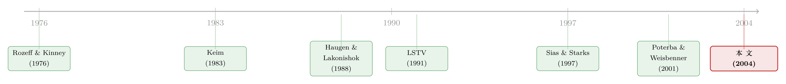

一月效应背后，是谁在悄悄换仓？
本文读的是 Ng & Wang (2004, Journal of Financial Economics)：作者用 13(f) 季度持仓数据，把「年末抛售小盘输家、年初回补」的机构交易行为，直接和小盘股的「岁末年初效应」对接起来——机构在四季度卖输家、在一季度买进赢家与输家，前者强化、后者削弱了那场著名的一月反弹。这是第一篇真正把「谁在交易」和「价格异象」连起来的证据。
1 一个被讲了二十年、却一直没找到「凶手」的故事
先说一个金融学里几乎人尽皆知的「怪现象」：每到一月头几个交易日，股票——尤其是小盘股——会莫名其妙地暴涨一阵。这就是 岁末年初效应（turn-of-the-year effect），也常被叫做 一月效应（January effect）。它从上世纪七十年代被发现，到今天仍然顽固地存在，是有效市场假说头上一根拔不掉的刺。
围绕它，文献里给出过两套最流行、却又彼此竞争的解释。
第一套，叫 税损抛售（tax-loss selling）。说的是：个人投资者出于避税动机，年底要把今年跌惨了的「输家股票」卖掉，好实现资本损失去抵税。这股抛压在年末压低价格，跨过元旦、抛压一停，价格反弹，于是一月暴涨。
第二套，叫 粉饰橱窗（window dressing）。说的是：机构投资者要在年末向持有人披露持仓，为了让报表「好看」，他们会赶在结账前把那些难堪的输家股票从组合里清掉。同样是年末卖输家，同样是年初反弹。
你看出问题了吗？这两套故事，预测的价格和成交量轨迹几乎一模一样。 年末都卖输家，年初都反弹。于是过去二十年里，几乎所有研究都卡在同一道坎上：光看价格和成交量，根本分不清到底是散户在避税，还是机构在化妆。Poterba & Weisbenner (2001)、Sias & Starks (1997) 这些近作已经把识别做得相当漂亮，但它们顶多能说「价格形态像税损抛售」，却始终无法直接指认——是哪一群人、做了哪一笔交易，亲手造出了这场异象。
更尴尬的是，两套故事都解释不了赢家小盘股的一月效应。 数据里，那些过去一年涨得不错的小盘赢家，一月里同样会涨一截。按避税逻辑，没人会去抛一只赚钱的股票来「实现损失」；按粉饰逻辑，机构也犯不着把赢家清出报表。这块拼图，两套主流解释都接不住。
本文就是冲着这两个缺口来的。
2 真正关键的一步：不看价格，去看持仓
这篇论文跟前人最不一样的地方，一句话就能说清：它不再从价格倒推动机，而是直接去翻机构的持仓账本。
数据来自两套。第一套是 CDA Investment Technologies 整理的 13(f) 机构持仓数据——这是美国 1934 年《证券交易法》第 13(f) 条强制要求的披露：任何管理超过 1 亿美元股票资产的机构,必须按季度向 SEC 申报其持仓。样本横跨 1986Q1 到 1999Q1，覆盖 NYSE、AMEX、NASDAQ 上的普通股（剔除 ADR、外国股、封闭式基金和 REIT）。第二套是 CRSP 的日度收益数据，时段对齐。
观察单位是「每家机构、每季度、每只股票」的持仓。有了季度持仓的变化，就能把每家机构在每个季度「买了什么、卖了什么」近似地还原出来——这正是价格数据给不了的东西。
接着，作者搭了两层分组。
第一层是规模。 每年九月底，按 NYSE 股票的市值断点，把全市场股票分成五个 规模五分位（size quintiles）。这一步很重要：用 NYSE 断点去切，会让大量小市值的 AMEX、NASDAQ 股票都落进最小那一档。Table 1 给出了一个直观的背景——到 1998 年，机构持有最小五分位里 94.4% 的股票，但只占其市值的 19.6%；而在最大五分位，机构持有 99.8% 的股票、占去 61.4% 的市值。换句话说，机构压倒性地偏爱大盘股，对小盘股是「广撒网、轻仓位」。顺带一提，机构在美国股市的地位这些年膨胀得惊人：1980 年它们只持有全市场 27.6% 的份额，到 1998 年已超过 50%；按 Gompers & Metrick (2001)，机构持股市值从 1980 年的 $375 billion 涨到 1996 年的 $3.98 trillion。一群越来越庞大、且行动趋同的玩家，他们的集体换仓，足以在小盘股这种「浅水区」里掀起浪。
第二层是输赢。 在每个规模档内部，再按股票当年 1 到 11 月的累计收益分组：收益大于零的归 赢家（winner）、小于零的归 输家（loser）；再把赢家、输家各劈成两半，于是每档里有四个表现分位，最底下那档叫 极端输家（extreme loser），最顶上那档叫 极端赢家（extreme winner）。
然后定义「岁末年初」这个窗口：取 12 月最后 10 个交易日（记作 Dec）和 1 月头 10 个交易日（记作 Jan），合起来 20 天，就是岁末年初的收益窗口。之所以用 10 天而非更长，是为了避开小盘股的「无成交」问题——Keim (1989) 就发现很多小盘股年初能连着四天没人交易。作者验证过，机构持有的那批小盘股里，约 99.8% 在这 10 天窗口内都有成交，所以无交易的污染基本可以忽略。
Table 2 先把异象本身复刻了一遍：全样本里，最小五分位股票的岁末年初收益（Jan 减 Dec）平均 3.7%，而最大五分位是 -1.3%。小盘里，极端输家最猛——Diff(J,D) 全样本达 7.2%（t ≈ 25），且在各子区间从 1986–1990 的 5.9% 一路升到 1994–1999 的 9.2%。极端赢家也有，但弱得多（约 1.2%，t ≈ 5.65），而且并非每个子区间都稳。异象还在，且依旧是「小盘、输家最强」的老面孔。
到这里，舞台搭好了。真正的问题是：账本翻开，机构到底在做什么？
3 把「粉饰」与「风险转移」量成一个比率
要回答这个问题，作者得先把「机构有没有刻意多卖输家」这件事，变成一个能算的数字。这是全文方法论的核心，值得一步步拆开。
直觉上，你不能光看机构在四季度卖了多少输家股票——因为如果它整体上就在大举减仓，那它卖的输家多，只是「水涨船高」。你要问的是：相对于它自己的整体抛售节奏，它有没有「额外」多卖输家？ 于是作者仿照 Lakonishok, Shleifer, Thaler & Vishny (1991，下称 LSTV) 的做法，构造了一个 卖出比率（sell ratio）。
对机构 \(k\)、在表现分位 \(j\)、于四季度 \(q\)，卖出比率定义为：
其中 \(SELL(j,q,k)\) 是机构 \(k\) 在四季度对分位 \(j\) 股票的卖出美元额，\(HOLD(j,q-1,k)\) 是它三季度末持有这些股票的美元额（价格取季度首末的均值）。
这个比率的妙处在于它「自带归一化」：分母把机构整体的交易强度除掉了，剩下的就是某一档相对于它自己平均水平的「超额」交易倾向。作者举了个干净的例子：假如一家机构卖掉了手中 30% 的极端输家，但整体只卖掉 20%，那么按上式算出的卖出比率就是 1.5——意味着它卖输家的力度，比卖其他股票高出 50%。比率大于 1，就是「相对多卖」；小于 1，就是「相对少卖」。买入比率（buy ratio）的构造完全对称。
有了这把尺子，两套行为假说就都能检验了。
四季度，看粉饰。 如果机构真在化妆橱窗，它们的极端输家卖出比率就该显著大于 1——年末赶在披露前清掉难看的输家。（关于机构如何围着季末披露的截止线排兵布阵，可参见《披露越「漂亮」，价格越「糊涂」？》。）
一季度，看风险转移。 这是本文相对前人最有新意的一层。Brown et al. (1996) 和 Chevalier & Ellison (1997) 都发现，基金经理会为了「相对业绩排名」而主动调节组合风险——业绩落后者倾向于加仓博一把。那么对机构来说，最适合「加载风险」的时点，恰恰是它们刚把年末持仓报给 SEC 之后，也就是新年伊始。这时它们会去买进更高风险、通常也更小的股票。如果机构在一季度大举买进小盘股（不分赢家输家），那这股买盘，就可能正是赢家小盘股一月效应的来源——那块前两套故事都接不住的拼图。（关于落后基金经理的风险调节，可另见《「赌一把」未必是加杠杆》。）
4 账本给出的答案：卖输家强化反弹，买输家熨平反弹
把比率算出来，结论相当干净，也相当符合上面两套行为逻辑。
第一，四季度，机构确实在卖极端输家小盘股——卖出比率系统性地高于 1，与粉饰橱窗一致。
第二，一季度，机构反手大买小盘股，赢家输家都买——与风险转移一致。
但本文真正的「反转」，不在于复述这两种行为，而在于它进一步把这些交易直接接到了价格上。作者检验了机构交易强度与它们所交易的那批小盘股岁末年初收益之间的关系，得到一组很有张力的结论：
- 当机构对极端输家小盘股的卖压越大，岁末年初效应就越强；
- 当机构对输家小盘股的买入越多，岁末年初效应就越弱。
换句话说，机构年末抛售输家，是在强化那场一月反弹；而机构若年末逆势买进输家，反而熨平了它。这是一个干净的「同一群人、两个方向、两种价格后果」的证据。
- 第三，机构在年初多买进，会在赢家股票里造出一个统计显著、但偏弱的一月效应——这正好填上了「赢家小盘股为什么也涨」的缺口。
最画龙点睛的是第四点：那些完全没有机构持股的小盘股，依然表现出显著的岁末年初效应。这批股票机构根本没碰，所以它们的一月反弹只可能来自个人投资者的税损抛售。这个对照组很关键——它说明税损抛售是真实存在的，但它的存在并不排斥机构交易的作用。
于是全文落到一个比前人更圆融的判断上：小盘输家的岁末年初效应，不是非此即彼，而是个人税损抛售与机构交易共同的产物。 这正是它超越「税损 vs 粉饰」二选一旧框架的地方。
5 文献脉络
这条研究线的源头，是一群发现「股市有季节性」的人。Rozeff & Kinney (1976) 最早记录了资本市场的季节性；随后 Keim (1983)、Reinganum (1983) 把它锁定为一个「小盘股、一月」的规模异象。早期的主流解释是个人投资者的税损抛售——Roll (1983)、Lakonishok & Smidt (1984)、Dyl (1977) 等都在这条线上添砖加瓦。

接着，另一条线浮现：Haugen & Lakonishok (1988) 在《The Incredible January Effect》里把粉饰橱窗提为一种解释；LSTV (1991) 则用养老金的持仓证据，说明机构确实会在披露前清掉输家。但这两派始终是「平行」的——谁也没能把机构行为和价格异象直接对上。Sias & Starks (1997)、Poterba & Weisbenner (2001)、Grinblatt & Moskowitz (2004) 用各种巧妙的横截面或税制变动做了间接区分，结论多偏向税损抛售，却仍停在「价格形态像谁」的层面。
本文的位置，就在这条「想直接指认凶手」的脉络的尽头：它第一次用机构层面的持仓账本，把交易行为与岁末年初收益对接，并顺手用「风险转移」补上了赢家小盘股那块缺口。它的姊妹篇 He, Ng & Wang (2004) 进一步说明，是什么样的激励驱动了机构的粉饰意愿。
6 评论与延伸（Q&A + 研究方向）
(a) 几个可能的疑问
Q：用季度持仓变化去近似「买卖」，会不会把季度中间的来回交易都抹平了？
会，这是
13(f)数据的硬约束——它只有季末快照，季度内的高频换仓看不见。作者引 LSTV 论证净额变化对机构是个「不错的代理」，但这意味着所有结论都是季度净流向层面的，无法捕捉年末最后几天的精细择时。这是数据所限，不是设计缺陷，但读者要记得结论的颗粒度。
Q：粉饰橱窗和风险转移，在四季度卖、一季度买这件事上，预测不是高度重叠吗？怎么分得开？
关键在时点与方向的不对称。粉饰的核心预测是四季度多卖输家（清掉难看持仓）；风险转移的核心预测是一季度多买高风险小盘股（披露之后再加载风险）。作者正是靠「四季度看卖、一季度看买」这一前后错位来切分二者，而不是靠某一个季度内的形态。
Q：那这和单纯的税损抛售，又怎么撇清？
靠那批「无机构持股」的小盘股做对照。机构没碰它们，它们却照样有显著的一月效应——这部分只能记在个人税损抛售头上。反过来，机构重仓的输家，其效应强弱随机构买卖压而系统性变化。两组对照放一起，税损与机构交易的贡献就被分开了。
Q：机构「年初买小盘」是风险转移，还是仅仅在做年度再平衡？
论文倾向风险转移解释（接 Brown et al. 1996、Chevalier & Ellison 1997 的锦标赛激励逻辑），但严格说，季度持仓数据本身无法排除机械再平衡或资金流入驱动的买进。这是识别上一个诚实的软肋——「买在年初」与「为博排名而加风险」在观测上不易完全分离。
Q：1998 年机构只占小盘股市值约 20%，这么轻的仓位，凭什么能驱动价格？
因为小盘股是「浅水区」，且机构行动趋同（Wermers 1999；Badrinath & Wahal 2002）。20% 的持仓若在同一时窗内同向进出，对一个流动性本就稀薄、个人持有为主的市场，边际冲击会被放大。论文的回归正是想量化这个边际效应。
Q：这套结论放到今天还成立吗？
要打问号。样本止于 1999 年，此后资本利得税制多次变动、机构占比继续攀升、被动指数化兴起，岁末年初效应本身在文献里也在衰减（论文也承认 1990 年代后期整体变弱）。机制可能仍在，但量级与构成大概率已经改写。
(b) 几个可能的研究问题与提案
1. 把同一套「持仓账本对接价格」的逻辑搬到公司债市场。
【经济故事】公司债同样有年末的机构再平衡和评级/会计窗口压力，且持有人高度机构化、流动性更差，年末抛压对价格的冲击可能比股票更剧烈。岁末年初是否也存在一个「信用利差季节性」，并由保险公司、债券基金的年末减仓驱动？
【可行性】中。数据上可用 eMAXX/保险公司 NAIC 持仓加 TRACE 成交，识别策略沿用本文的买卖比率。难点是公司债季度持仓的频率与匹配质量，以及把「税损」从「资本监管驱动的减仓」中剥离。
2. 外资持有人在岁末年初的行为是否与本土机构相反或错位。
【经济故事】外资的财年、税务年度、披露义务常与美国本土机构不一致，若他们在美股的年末没有同样的粉饰/避税动机，就可能成为年末抛压的「逆向接盘人」，从而削弱异象。这能为「谁在驱动异象」提供一个准自然的横截面对照。
【可行性】中。需要能区分境内外机构的 13(f) 或更细的托管数据；识别上可比较高外资持股 vs 低外资持股小盘股的岁末年初收益差异。
3. 用更高频的持仓（如月度基金持仓或日度大宗交易）重估季度数据被抹平的部分。 【经济故事】本文受限于季末快照，看不到年末最后几个交易日的精细择时。若粉饰真的集中在披露前数日，月度/日度数据应能看到一个比季度更尖锐的「卖在年末、买在年初」脉冲。 【可行性】高。月度基金持仓（如 Morningstar/SEC N-PORT 时代数据）与机构大宗交易数据已可得，可直接检验季内时点假说，doable。
4. 被动指数化与机构占比上升，是否「吃掉」了这条异象。 【经济故事】被动资金不做粉饰、不博排名，其份额上升会稀释主动机构的年末交易冲击。把异象强度对「主动机构占比」「被动占比」做时间序列回归，能直接检验机制是否随市场结构变迁而衰减。 【可行性】高。所需的指数化份额、机构占比序列均公开可得，识别用时变占比解释异象时变强度即可，是一个清晰的复制+延伸题。
参考文献
- Brown, K.C., Van Harlow, W., Starks, L.T. (1996). Of tournaments and temptations: an analysis of managerial incentives in the mutual fund industry. Journal of Finance 51, 85–110.
- Chevalier, J., Ellison, G. (1997). Risk taking by mutual funds as a response to incentives. Journal of Political Economy 105, 1167–1200.
- Gompers, P.A., Metrick, A. (2001). Institutional investors and equity prices. Quarterly Journal of Economics 116, 229–259.
- Haugen, R., Lakonishok, J. (1988). The Incredible January Effect: The Stock Market's Unsolved Mystery. Dow-Jones-Irwin, Homewood, Ill.
- He, J., Ng, L., Wang, Q. (2004). Quarterly trading patterns of financial institutions. Journal of Business, forthcoming.
- Keim, D. (1983). Size-related anomalies and stock return seasonality: further empirical evidence. Journal of Financial Economics 12, 13–32.
- Keim, D. (1989). Trading patterns, bid-ask spreads, and estimated security returns: the case of common stocks at calendar trading point. Journal of Financial Economics 25, 75–97.
- Lakonishok, J., Shleifer, A., Thaler, R., Vishny, R. (1991). Window dressing by pension fund managers. American Economic Review 81, 227–231.
- Lakonishok, J., Smidt, S. (1984). Volume and turn-of-the-year behavior. Journal of Financial Economics 13, 435–455.
- Ng, L., Wang, Q. (2004). Institutional trading and the turn-of-the-year effect. Journal of Financial Economics 74, 343–366.
- Poterba, J.M., Weisbenner, S.J. (2001). Capital gains tax rules, tax loss trading, and turn-of-the-year returns. Journal of Finance 56, 353–367.
- Reinganum, M. (1983). The anomalous stock market behavior of small firms in January. Journal of Financial Economics 12, 89–104.
- Rozeff, M., Kinney, W. (1976). Capital market seasonality: the case of stock returns. Journal of Financial Economics 3, 379–402.
- Sias, R.W., Starks, L.T. (1997). Institutions and individuals at the turn-of-the-year. Journal of Finance 52, 1543–1562.
我的判断。 这篇论文最实在的贡献，是把一场被讲了二十年、却始终停在「价格像谁」层面的争论，第一次拽到了「谁、在哪一季度、做了哪一笔交易」的微观证据上——而且它没有走「机构 vs 散户」的零和老路，而是给出一个更成熟的「共同驱动」结论，还顺手用风险转移补上了赢家小盘股这块旧缺口。识别上我最担心两点：一是季度持仓快照抹掉了年末最关键的几天择时，所有结论都只能停在季度净流向的颗粒度；二是「年初买小盘」究竟是博排名的风险转移，还是机械再平衡，观测上未必分得干净。后续我最想看到的，是用月度/日度持仓把季内脉冲还原出来，以及把这套「账本对接价格」的方法搬去流动性更差、机构化更彻底的公司债市场——那里若也藏着一条「信用利差的岁末年初效应」，会比股票市场更有故事。